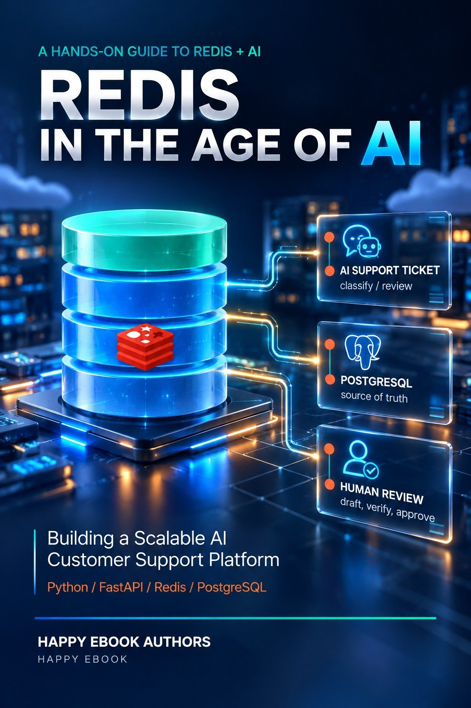

Redis in the Age of AI: Building a Scalable AI Customer Support Platform
A Hands-On Guide to Python, FastAPI, and Redis

Redis in the Age of AI: Building a Scalable AI Customer Support Platform
A Hands-On Guide to Python, FastAPI, and Redis
Build an AI customer-support ticketing platform with Python, FastAPI, Redis, and PostgreSQL, while keeping each component's responsibilities clear. This practical guide starts with ticket data and a minimal API, then explores cache-aside reads, expiration, rate limiting, session tokens, background processing, Redis Streams, RQ retries, idempotency, and operational checks. It also shows how to treat AI output as a draft: validate it, save it for human review, and never let an unreviewed model response send itself to a customer. Examples distinguish conceptual demonstrations from runnable paths and expected behavior from results that have actually been tested. Learn why PostgreSQL holds authoritative ticket and job state, how Redis supports rebuildable cache and short-lived workflow data, and what additional production work remains. The book references a companion GitHub repository, but does not include its source files. The repository's license and redistribution rights have not been verified; review its license before using or redistributing companion materials.